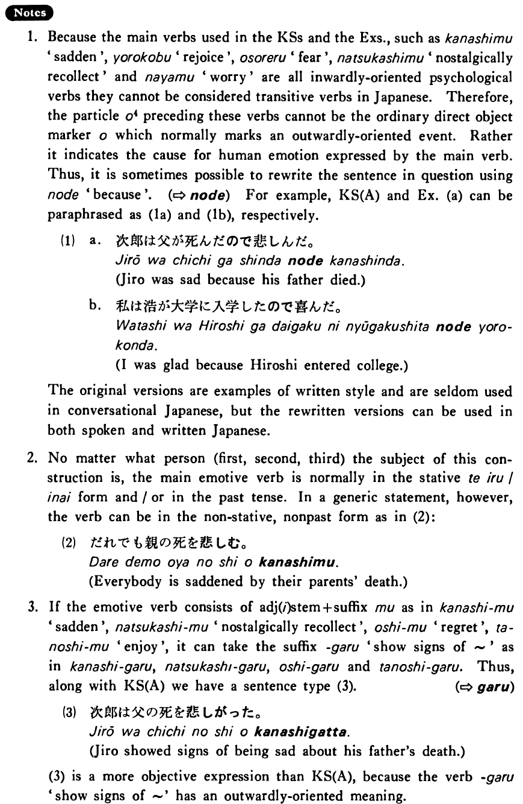

を (4) (B. 352)
- (ksa).
- 次郎は父の死を悲しんだ・悲しみました。
- Jiro was saddened at his father's death.
- (ksb).
- 次郎は父が死んだこと・のを悲しんだ・悲しみした。
- Jiro was sad that his father died.
- (a).
- 私は浩の大学入学を喜んだ。
- I was happy about Hiroshi's entering college.
- (b).
- ヨーロッパ人はまだ戦争が起きることを恐れている。
- Europeans are afraid that war will break out again.
- (c).
- 信子は京都での一年を懐かしんだ。
- Nobuko nostalgically recollected her year in Kyoto.
- (d).
- 林は英語が出来ないことを悩んでいる。
- Hayashi is worried that he cannot speak English.
